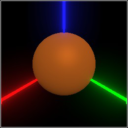
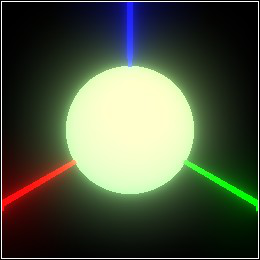
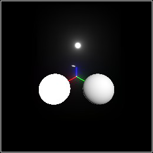
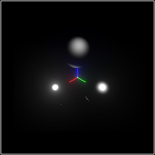
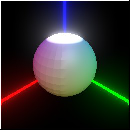

3 Shape Attributes
Every occupied point in 3D space has associated attributes. The attributes that Pict3D manages, which influence rendering, are reflected color, emitted color, and material.
procedure
(current-color) → RGBA
(current-color c) → Void c : RGBA
= default-color
procedure
(current-emitted e) → Void e : Emitted
= default-emitted
procedure
(current-material m) → Void m : Material
= default-material
> (parameterize ([current-color (rgba "chocolate")]) (sphere origin 1/2)) 
syntax
(with-color c body ...)
rgba : RGBA
syntax
(with-emitted e body ...)
emitted : Emitted
syntax
(with-material m body ...)
material : Material
value
default-color : RGBA = (rgba "white")
value
default-emitted : Emitted = (emitted "black" 0)
value
=
(material #:ambient 0.05 #:diffuse 0.6 #:specular 0.35 #:roughness 0.3)
procedure
p : Pict3D c : RGBA
procedure
(set-emitted p e) → Pict3D
p : Pict3D e : Emitted
procedure
(set-material p m) → Pict3D
p : Pict3D m : Material
> (set-emitted (parameterize ([current-color (rgba "chocolate")]) (sphere origin 1/2)) (emitted "lightgreen" 2)) 
3.1 Reflected Color Attributes
procedure
color :
(U RGBA Real (Listof Real) (Vectorof Real) FlVector String (Instance Color%)) alpha : Real = 1 (rgba red green blue [alpha]) → RGBA red : Real green : Real blue : Real alpha : Real = 1
> (rgba "white") (rgba 1.0 1.0 1.0 1.0)
> (rgba "white" 0.5) (rgba 1.0 1.0 1.0 0.5)
> (rgba (rgba "white") 0.5) (rgba 1.0 1.0 1.0 0.5)
> (rgba 1/2) (rgba 0.5 0.5 0.5 1.0)
> (rgba 0.2 0.3 0.4) (rgba 0.2 0.3 0.4 1.0)
> (rgba '(1/2 1/4 1/8)) (rgba 0.5 0.25 0.125 1.0)
> (rgba #(1/2 1/4 1/8)) (rgba 0.5 0.25 0.125 1.0)
> (rgba (flvector 0.5 0.25 0.125)) (rgba 0.5 0.25 0.125 1.0)
procedure
rgba : RGBA
procedure
(rgba-green rgba) → Flonum
rgba : RGBA
procedure
rgba : RGBA
procedure
(rgba-alpha rgba) → Flonum
rgba : RGBA
> (match-define (rgba r g b a) (rgba "lavender" 0.75)) > (list r g b a) '(0.9019607843137255 0.9019607843137255 0.9803921568627451 0.75)
3.2 Emitted Color Attributes
procedure
color :
(U Emitted Real (Listof Real) (Vectorof Real) FlVector String (Instance Color%)) intensity : Real = 1 (emitted red green blue [intensity]) → Emitted red : Real green : Real blue : Real intensity : Real = 1
procedure
(emitted-red emitted) → Flonum
emitted : Emitted
procedure
(emitted-green emitted) → Flonum
emitted : Emitted
procedure
(emitted-blue emitted) → Flonum
emitted : Emitted
procedure
(emitted-intensity emitted) → Flonum
emitted : Emitted
> (match-define (emitted r g b i) (emitted 1 2 3 1)) > (list r g b i) '(0.3333333333333333 0.6666666666666666 1.0 3.0)
3.3 Material Attributes
procedure
(material [ #:ambient ambient #:diffuse diffuse #:specular specular #:roughness roughness]) → Material ambient : Real = 0 diffuse : Real = 0 specular : Real = 0 roughness : Real = 0.1
> (combine (with-material (material #:ambient 1.0) (sphere (pos 1 0 0) 1/2)) (with-material (material #:diffuse 1.0) (sphere (pos 0 1 0) 1/2)) (with-material (material #:specular 1.0) (sphere (pos 0 0 1) 1/2))) 
The y-axis sphere has only diffuse reflectance. It looks dull; not shiny at all.
The z-axis sphere has only specular reflectance. It looks only shiny.
> (combine (with-material (material #:specular 1.0 #:roughness 0.1) (sphere (pos 1 0 0) 1/2)) (with-material (material #:specular 1.0 #:roughness 0.2) (sphere (pos 0 1 0) 1/2)) (with-material (material #:specular 1.0 #:roughness 0.4) (sphere (pos 0 0 1) 1/2))) 
procedure
(material-ambient material) → Flonum
material : Material
procedure
(material-diffuse material) → Flonum
material : Material
procedure
(material-specular material) → Flonum
material : Material
procedure
(material-roughness material) → Flonum
material : Material
3.4 Vertex Attributes
The functions triangle and quad accept not just position arguments, but vertex arguments that contain positions and can override any current shape attributes.
> (define (make-a-vertex dv) (match-define (dir r g b) dv) (vertex (pos+ origin dv 0.5) #:normal (if (<= (- r g) 0) dv #f) #:color (rgba (* 0.5 (+ 1 r)) (* 0.5 (+ 1 g)) (* 0.5 (+ 1 b))) #:emitted (if (> b 0.9) (emitted 1 2) #f)))
> (combine (for*/list ([ρ (in-range -90 91 10)] [θ (in-range -180 180 10)]) (define last-ρ (- ρ 10)) (define last-θ (- θ 10)) (define dvs (list (angles->dir θ ρ) (angles->dir last-θ ρ) (angles->dir last-θ last-ρ) (angles->dir θ last-ρ))) (apply quad (map make-a-vertex dvs)))) 
procedure
(vertex pos [ #:normal normal #:color color #:emitted emitted #:material material]) → Vertex pos : Pos normal : (U #f Dir) = #f color : (U #f RGBA) = #f emitted : (U #f Emitted) = #f material : (U #f Material) = #f
procedure
(vertex-pos vertex) → Pos
vertex : Vertex
procedure
(vertex-normal vertex) → (U #f Dir)
vertex : Vertex
procedure
(vertex-color vertex) → (U #f RGBA)
vertex : Vertex
procedure
(vertex-emitted vertex) → (U #f Emitted)
vertex : Vertex
procedure
(vertex-material vertex) → (U #f Material)
vertex : Vertex
3.5 Interval Arguments
value
zero-interval : Interval = (interval 0 0)
value
unit-interval : Interval = (interval 0 1)
procedure
(interval-min i) → Flonum
i : Interval
procedure
(interval-max i) → Flonum
i : Interval
> (match-define (interval mn mx) (interval 1 -1)) > (list mn mx) '(-1.0 1.0)
3.6 Arc Arguments
> (match-define (arc start end) (arc 360 0)) > (list start end) '(0.0 360.0)